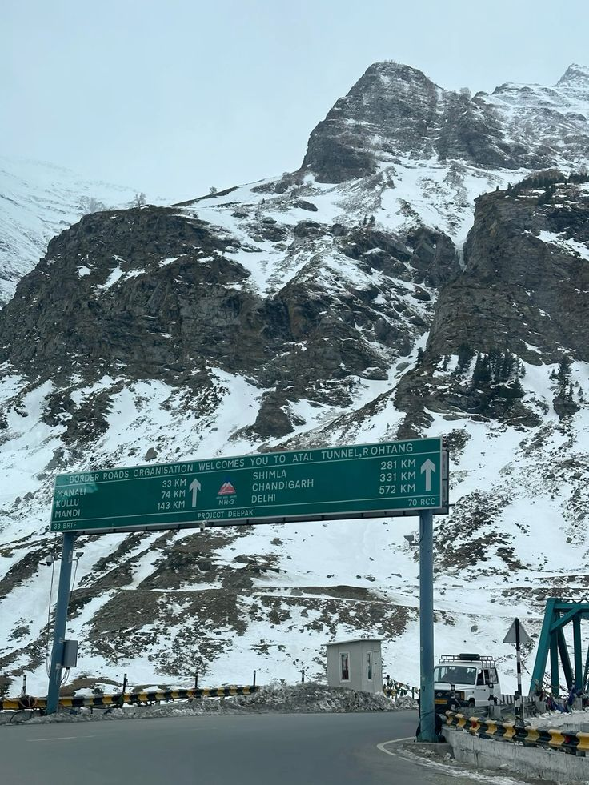
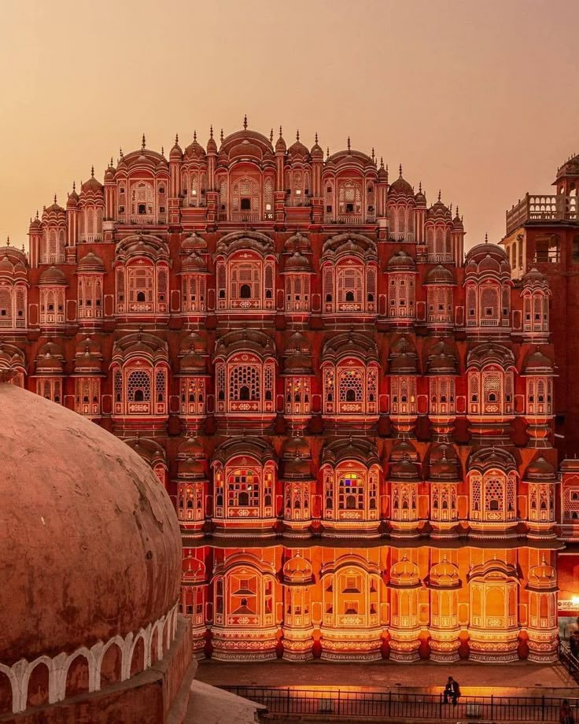

MY TRAVEL BLOG
Welcome to My Travel Blog
Welcome to my travel blog! Here I share information about beautiful destinations, amazing places and memorable travel experiences.
Places to Visit
1. Goa

Goa is a beautiful tourist destination in India. It is famous for its beautiful beaches, churches, markets and delicious food. Baga Beach, Calangute Beach and Fort Aguada are popular places to visit in Goa.
2. Manali

Manali is a beautiful hill station in Himachal Pradesh. It is surrounded by mountains, rivers and green valleys. It is a popular destination for nature lovers and adventure activities.
3. Jaipur

Jaipur is known as the Pink City of India. It is famous for its forts, palaces and historical monuments. Hawa Mahal, Amber Fort and City Palace are popular tourist attractions.
Travel Tips
- Carry important documents.
- Keep your luggage safe.
- Carry enough water.
- Respect the local culture.
- Enjoy and capture beautiful memories! 📷